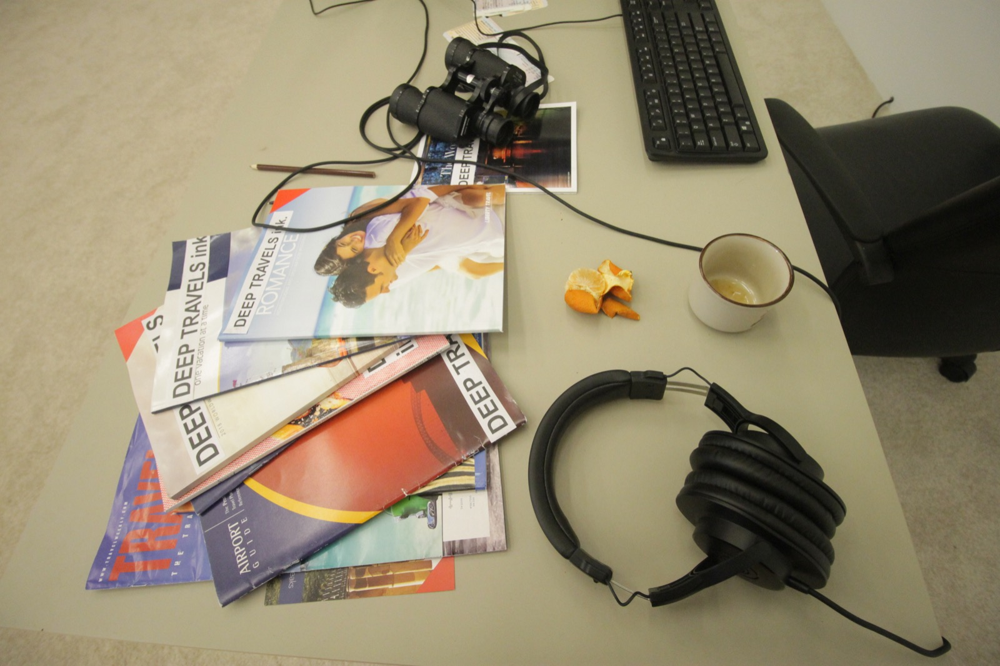

Il mondo dell'editoria a livello internazionale sta subendo una trasformazione in atto oramai da diversi anni, senza però aver trovato ad oggi una linea ben precisa da perseguire. I numerosi cambiamenti avvenuti a cavallo del web 1 ed il web 2 con il passaggio da una fruizione online passiva ad una sempre più attiva attraverso singoli attori appartenenti al pianeta del giornalismo, divenuti creatori propri di contenuti sulle molteplici piattaforme presenti in rete, hanno portato il mercato editoriale ad osservare l'incremento di una immensa quantità di materiale giornalistico in rete, arrivando talvolta a confondere i lettori.
MOD ed il suo team stanno da tempo lavorando per offrire una definizione alternativa dell'editoria, in cui la decentralizzazione con una più trasversale ed eterogenea fruizione delle news potrebbe portare presto a rappresentare l'inizio di quella trasformazione epocale che il settore attende da tempo.
Fra le numerose iniziative lo sviluppo di un polo editoriale totalmente decentralizzato e appartenente ad una DAO che non risponda quindi ad un editore con le proprie esigenze e scopi ma che dialoghi con tutti coloro che intendano farne parte, coniugando l'utilizzo della blockchain con l'intelligenza artificiale per offrire una realtà in cui comunemente sia reale proiettarsi nell'editoria del futuro.
Il team di MOD sta progettando numerosi tools per l'editoria da rilasciare all'interno del proprio ecosistema, per allargare in modo deciso la base del coinvolgimento verso una vera informazione decentralizzata, realtà quasi impossibile da immaginare fino a pochissimo tempo fa.
